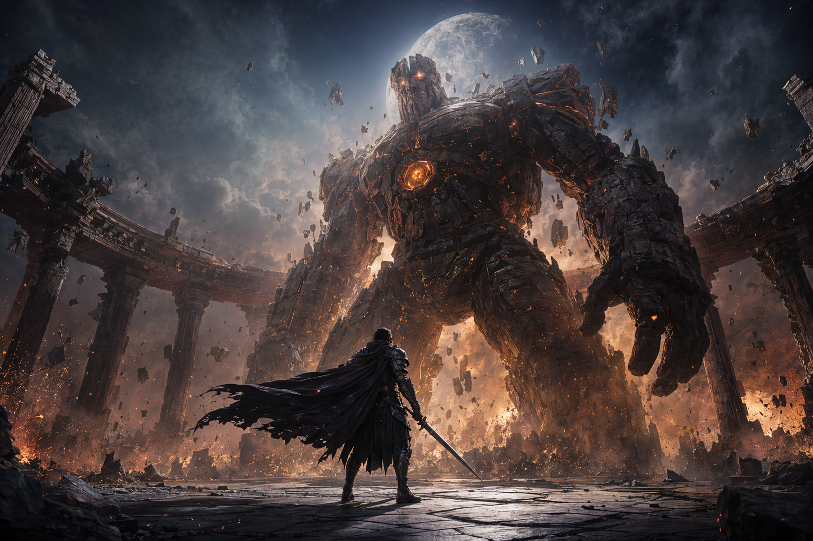
Game Art 游戏艺术 / gpt-image-2
Copy-ready recipes for game art, cinematic film frames, anime character cards, beauty editorials, and commercial visuals. 收录游戏关键图、电影感画面、角色立绘、人像大片与商业视觉，配好真实生成图和可复用画面配方。

Game Art 游戏艺术 / gpt-image-2
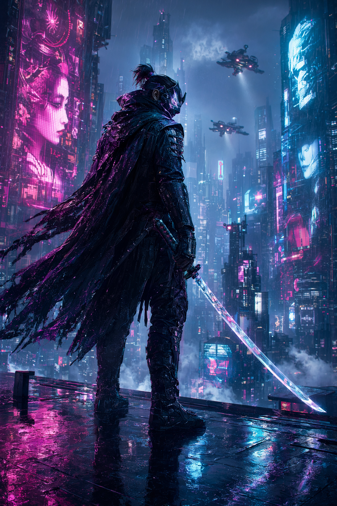
Game Art 游戏艺术 / gpt-image-2
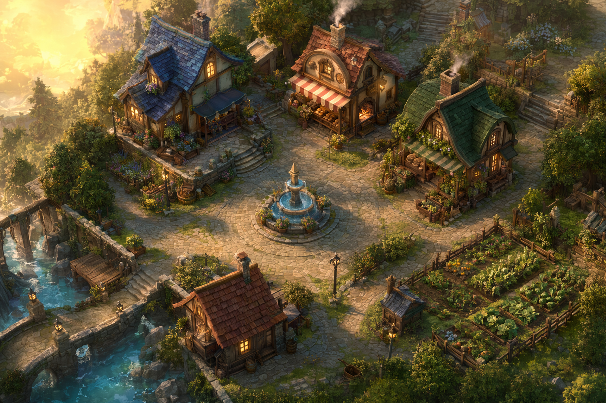
Game Art 游戏艺术 / gpt-image-2
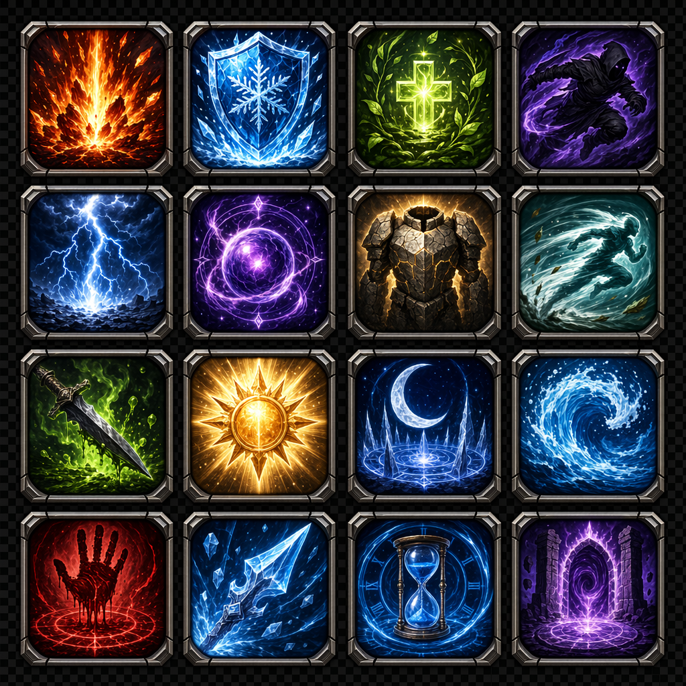
Game Art 游戏艺术 / gpt-image-2
Game Art 游戏艺术 1536x1024
High-share fantasy composition with a clear scale hook. 具有强比例冲击的奇幻关键图，适合传播。
Create AAA fantasy game key art for a colossal stone golem awakening inside a ruined circular arena. A lone armored adult hero stands in the foreground for scale, seen from behind, cloak moving in the wind. Use dramatic low-angle composition, volcanic orange backlight, blue moon rim light, floating ash, cracked marble floor, readable silhouette, and poster-ready negative space at the top. Epic but believable game marketing art, no logos, no text.
Game Art 游戏艺术 1024x1536
Vertical key art is useful for social cards and mobile previews. 竖版关键图适合社交卡片和移动端预览。
Design vertical cover art for an original cyberpunk action game. Show an adult masked samurai standing on a rain-slick rooftop above a dense neon megacity, holding a glowing glass katana. Use magenta and cyan signs reflected in puddles, strong rim light, mist, distant drones, readable character silhouette, premium console-game box art polish, and no text or branding.
Game Art 游戏艺术 1536x1024
Cozy game assets are broadly shareable and contrast with dark key art. 治愈系游戏资产传播面广，也能和暗黑关键图形成对比。
Generate isometric game environment art for a cozy RPG village at sunrise. Include a tiny bakery, herb shop, fountain plaza, vegetable gardens, soft smoke from chimneys, small paths, and warm inviting windows. Hand-painted 3D look, soft shadows, readable asset shapes, charming but not childish, texture-ready details, no UI, no text.
Game Art 游戏艺术 1024x1024
Icon sheets are useful, collectible, and easy to compare. 图标套装实用、可收藏，也方便对比效果。
Create a game UI icon sheet with 16 square fantasy RPG ability icons on a dark transparent-feel background. Include fire burst, ice shield, forest heal, shadow step, thunder strike, arcane orb, stone armor, wind dash, poison blade, solar blessing, moon trap, water surge, blood pact, crystal spear, time slow, and summon gate. Consistent beveled frame, high contrast, readable at small size, no labels, no text.
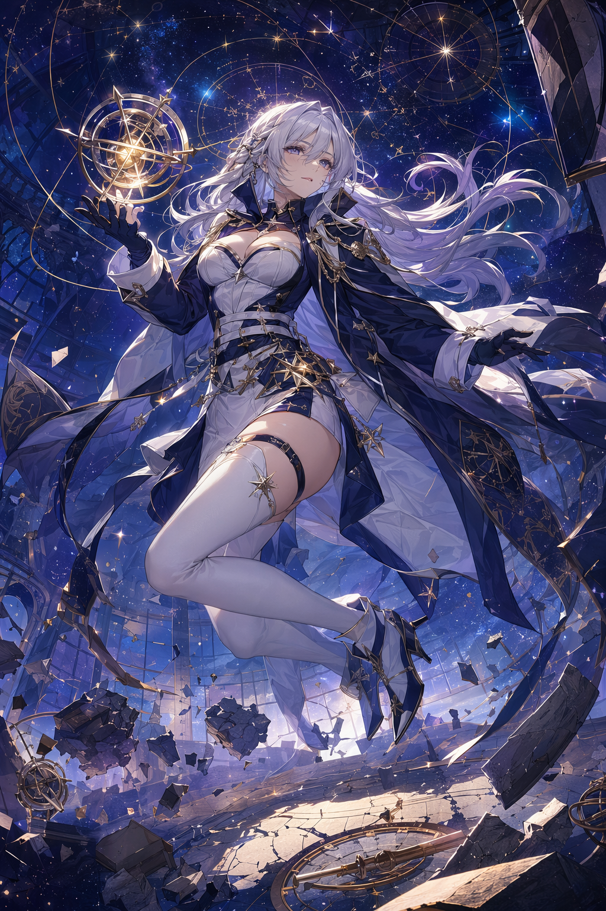
Anime Character 二次元角色 1024x1536
Anime splash art has strong save-and-share behavior. 二次元立绘有很强的收藏和转发属性。
Create original anime-style gacha splash art for an adult star navigator heroine. She wears a white and navy expedition coat with small gold hardware, holds a glowing astrolabe, and floats above a shattered observatory floor. Dynamic diagonal pose, star maps swirling behind her, crisp linework, luminous effects, polished mobile game character art, no text, no watermark, no existing franchise style.
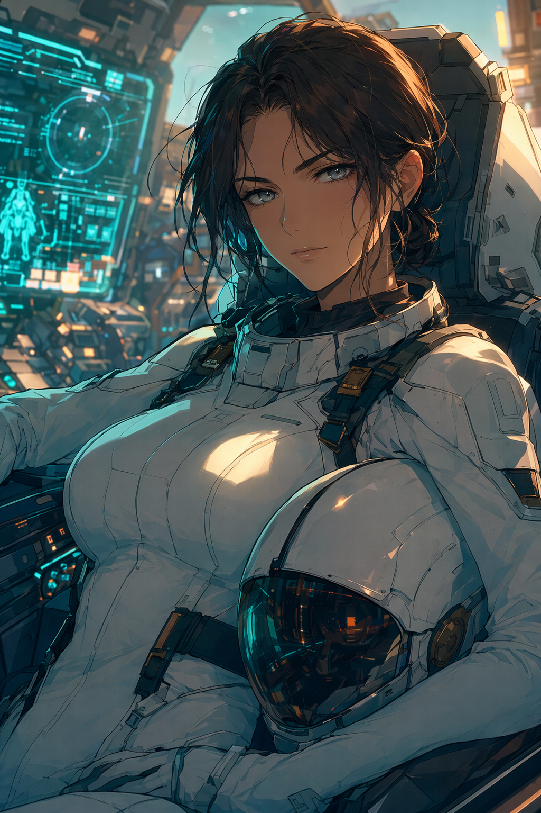
Anime Character 二次元角色 1024x1536
Pairs character appeal with cinematic lighting. 把角色吸引力和电影感灯光结合起来。
Draw an original anime mecha pilot portrait of an adult woman in a white pressure suit inside a cockpit, helmet under one arm, confident calm expression. Reflections from holographic controls light her face, blurred mechanical panels behind her, teal and warm amber palette, crisp cel shading with painterly highlights, premium sci-fi character illustration, no text, no logos.
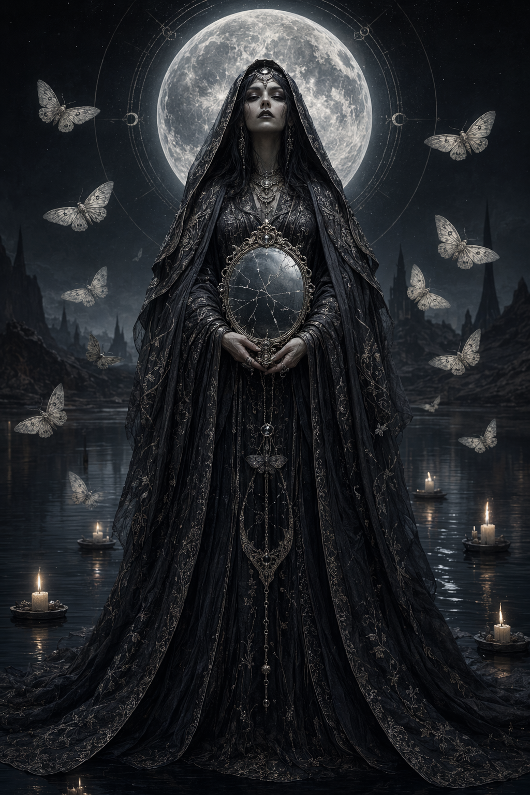
Anime Character 二次元角色 1024x1536
Dark fantasy character cards are visually sticky in feeds. 暗黑幻想卡牌在信息流里很容易抓眼。
Create original dark fantasy collectible card art of an adult moonlit oracle standing before a black lake. She wears layered charcoal robes with silver embroidery, holds a cracked mirror, and is surrounded by pale moths and floating candles. Elegant gothic mood, symmetrical composition, detailed fabric, dramatic moon halo, card-art polish, no frame, no text.
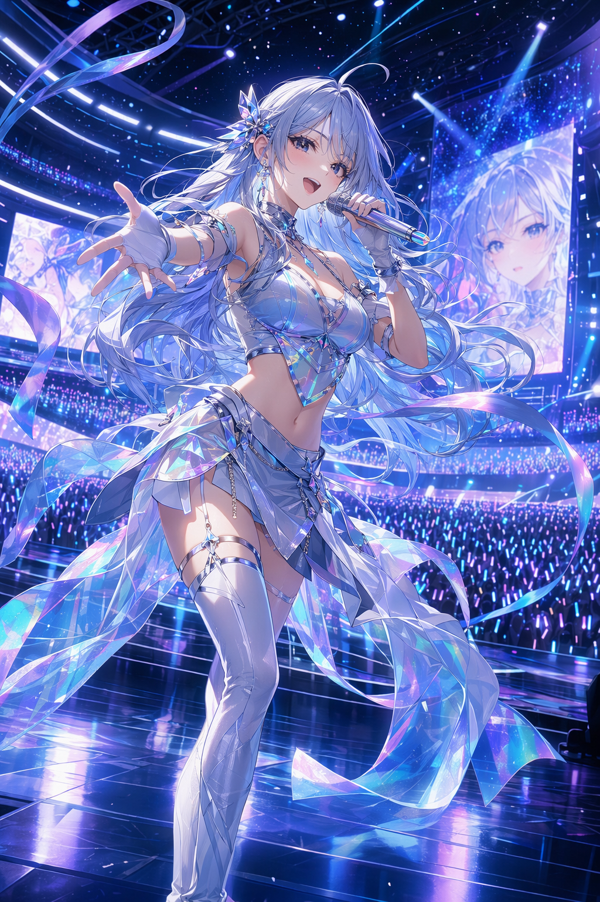
Anime Character 二次元角色 1024x1536
Bright concert imagery gives the gallery a more viral color range. 明亮演唱会画面能拉开 gallery 的传播色域。
Create a bright anime concert poster image for an original adult virtual idol performer on a futuristic stage. She wears a holographic silver-blue outfit, dynamic singing pose, translucent ribbon lights, thousands of tiny glow sticks in the audience, glossy stage reflections, energetic but clean composition, no readable text, no watermark.
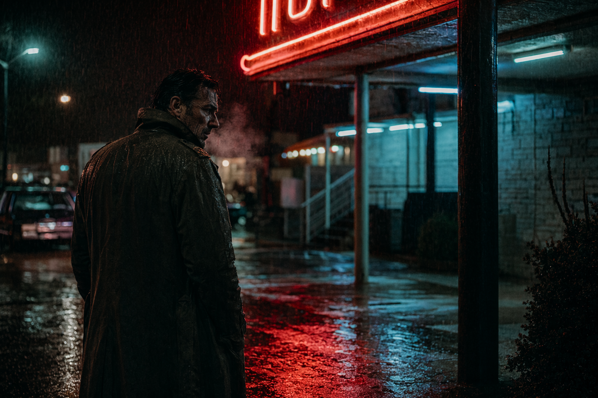
Cinematic Film 影视电影感 1536x1024
Rain, neon, and mystery are reliable visual hooks. 雨夜、霓虹和悬疑是稳定的视觉钩子。
Create a cinematic film still of an adult detective standing under a flickering motel sign during heavy rain at midnight. Trench coat, wet pavement, cigarette smoke replaced by visible cold breath, red and blue neon reflections, 35mm anamorphic lens feel, shallow depth of field, gritty film grain, strong story tension, no text, no logo.
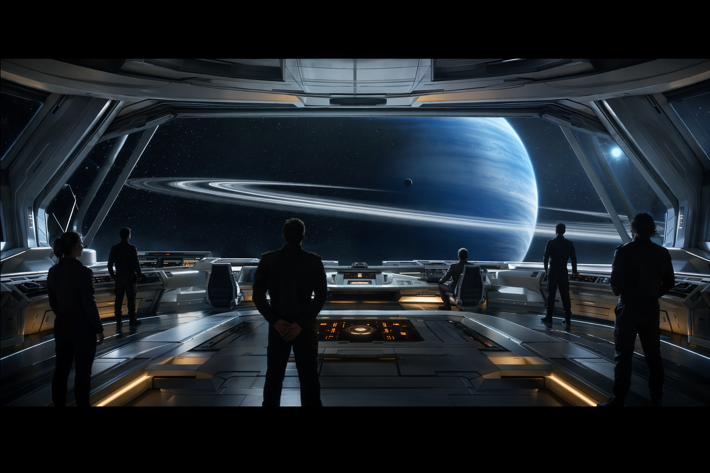
Cinematic Film 影视电影感 1536x1024
Ultra-wide sci-fi shots work well as gallery hero candidates. 超宽科幻镜头很适合作为 gallery 主视觉候选。
Create an ultra-wide cinematic frame inside the bridge of an original deep-space exploration vessel. Adult crew silhouettes face a vast observation window showing a blue gas giant and a thin ring system. Use clean production design, cool white panels, amber emergency accents, volumetric light beams, 21:9 composition, premium science-fiction film still, no text.
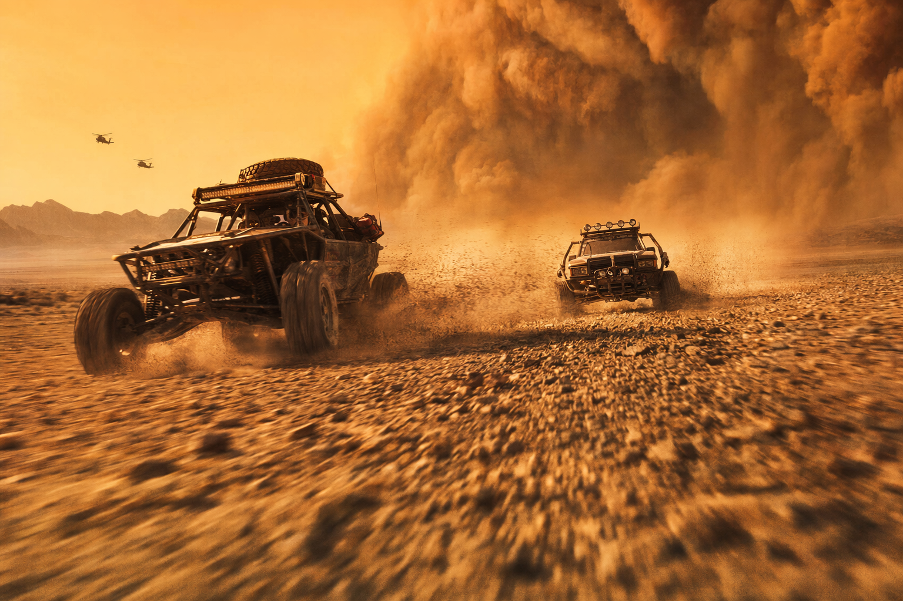
Cinematic Film 影视电影感 1536x1024
Action frames add energy to the collection. 动作电影帧能给合集增加速度感。
Create a sun-blasted action movie frame of two rugged off-road vehicles racing across a desert salt flat. Dust plumes form a diagonal composition, a storm wall rises in the distance, helicopters are tiny silhouettes near the horizon, warm orange grade, hard noon light, motion blur on foreground rocks, cinematic realism, no text.
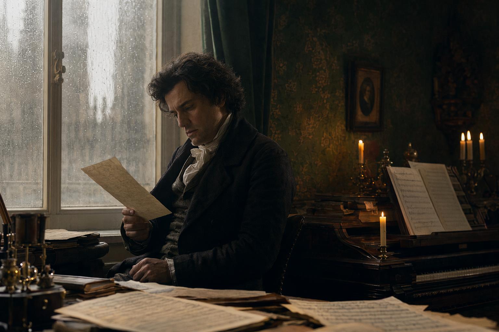
Cinematic Film 影视电影感 1536x1024
Slower cinematic prompts show range beyond spectacle. 慢节奏电影感样本能展示不止有大场面。
Create a quiet period drama film still inside a candlelit study. An adult composer sits by a tall rain-streaked window, reading an unfinished letter beside scattered sheet music. Soft window light, warm candle practicals, muted emerald wallpaper, shallow depth, rich production design, restrained emotional tension, no readable text.
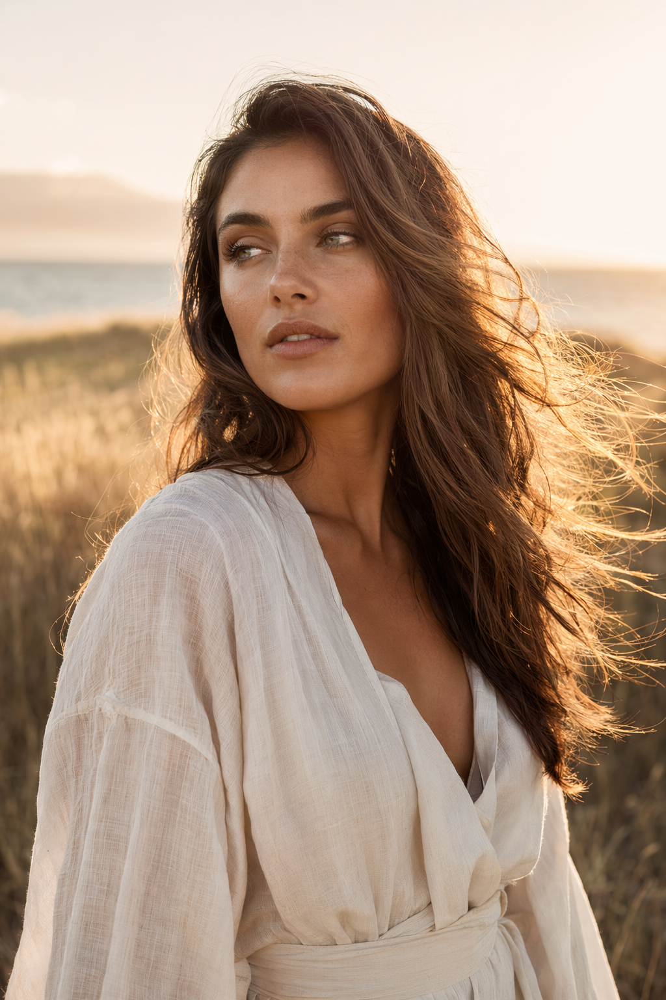
Beauty Photo 人像大片 1024x1536
Soft beauty portraits are highly clickable when kept tasteful. 克制高级的柔光美女人像点击率通常更好。
Create a tasteful editorial beauty portrait of an adult woman in her late 20s standing in a windswept coastal field at golden hour. Natural makeup, luminous skin texture, linen ivory blouse, hair moving softly, 85mm portrait lens feel, warm backlight, gentle lens flare, shallow depth of field, premium fashion magazine photography, non-sexual, no text.
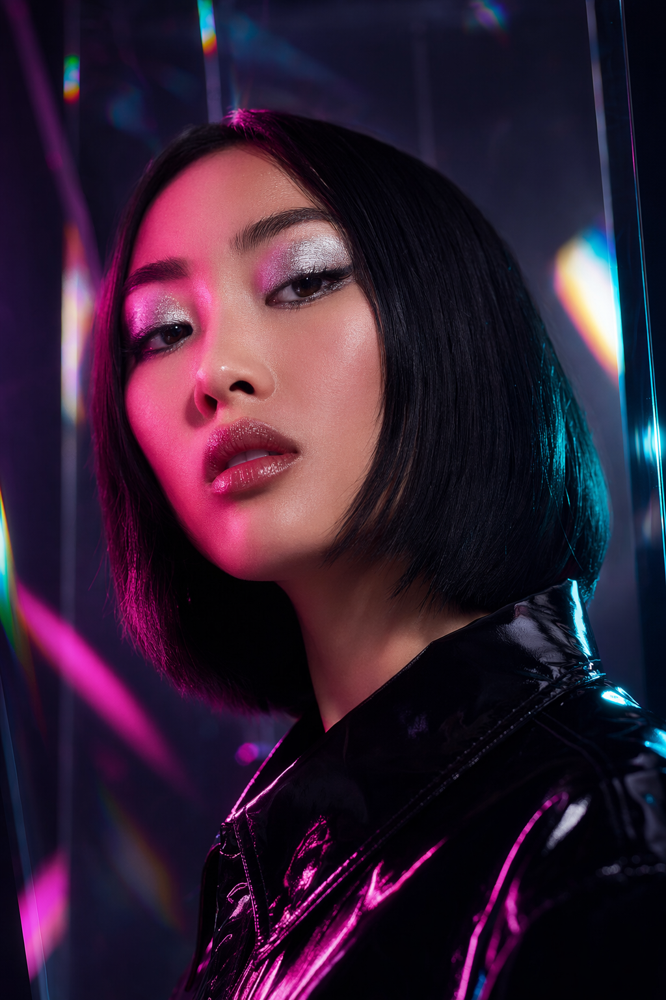
Beauty Photo 人像大片 1024x1536
Neon portraits give strong thumbnail contrast. 霓虹人像缩略图对比强，容易吸引注意。
Create a high-fashion beauty editorial portrait of an adult woman with glossy black bob hair in a dark studio. Use magenta neon key light, cyan rim light, glass prism reflections across the background, metallic silver eye makeup, glossy black jacket, direct confident gaze, 70mm lens feel, crisp skin detail, non-sexual, no text.
Beauty Photo 人像大片 1024x1536
Vintage film style is familiar, aspirational, and shareable. 复古胶片风熟悉、向往感强，也适合传播。
Create a tasteful 1970s-inspired film portrait of an adult fashion model leaning beside a sunlit hotel balcony. Cream silk scarf, oversized sunglasses held in hand, warm faded color, visible 35mm film grain, soft overexposed highlights, Mediterranean architecture in the background, elegant travel editorial mood, non-sexual, no text.
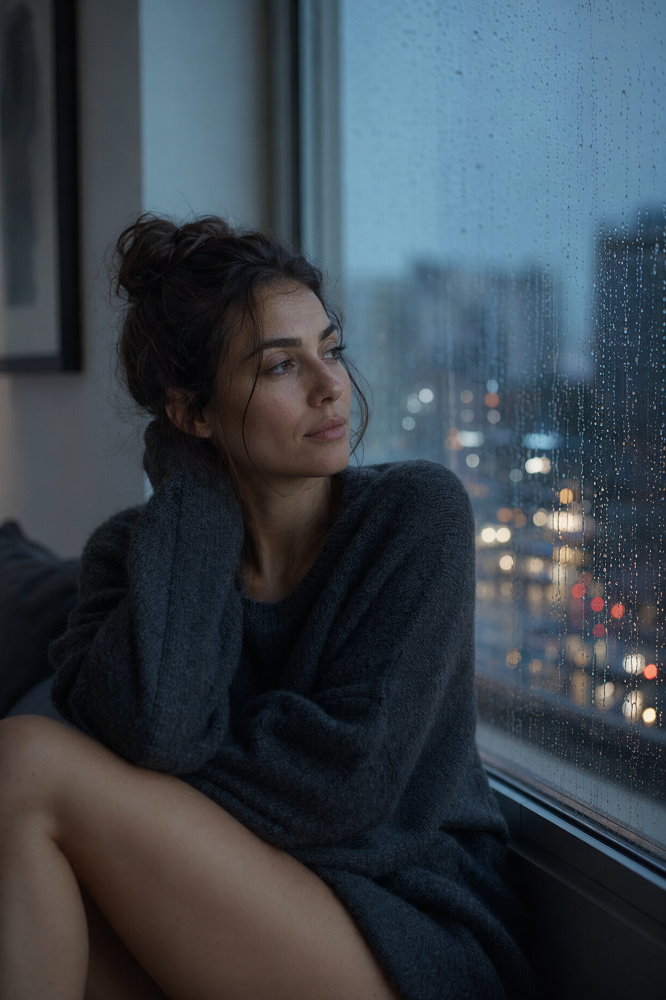
Beauty Photo 人像大片 1024x1536
Emotional portraits add story instead of pure glamour. 情绪人像比单纯精致更有故事感。
Create an intimate editorial portrait of an adult woman sitting beside a large rainy apartment window at blue hour. Oversized charcoal sweater, natural skin texture, soft reflective window light, blurred city bokeh outside, quiet thoughtful expression, 50mm lens feel, muted blue-grey palette, premium lifestyle photography, non-sexual, no text.
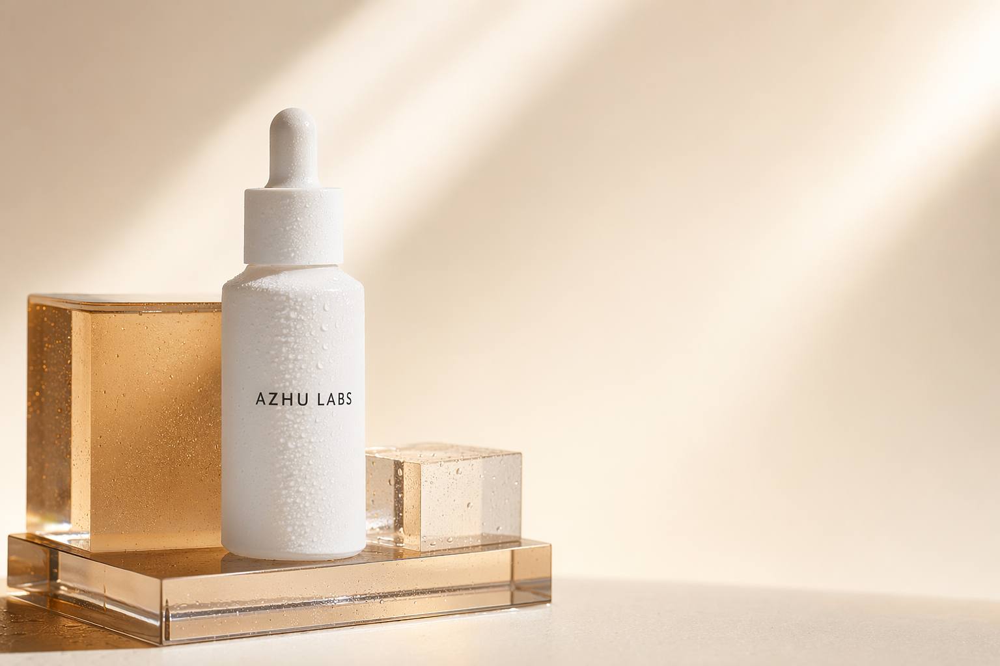
Commercial 商业品牌 1536x1024
Strong commercial demo because product shots are easy to compare and reuse. 商业演示稳定，产品图容易对比和复用。
Create a premium e-commerce hero image for a matte white skincare serum bottle on translucent amber acrylic blocks. Use a warm cream background, soft diagonal morning light, subtle condensation on the bottle, realistic glass reflections, and enough negative space on the right for headline text. Keep the label minimal with the readable text 'AZHU LABS'. Photorealistic studio product photography, 85mm lens feel, high-end direct-to-consumer brand.
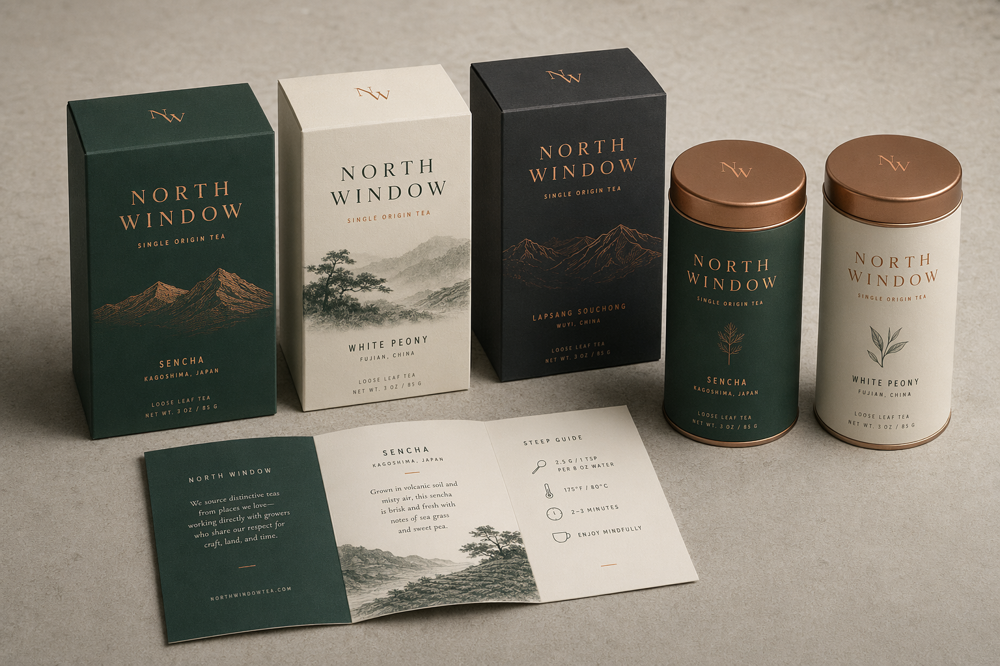
Commercial 商业品牌 1536x1024
Useful for brand designers and e-commerce creators. 适合品牌设计师和电商创作者。
Create a brand packaging system mockup for a specialty tea company named 'North Window'. Show three boxes, two cylindrical tins, and a folded paper insert on a neutral stone surface. Use a restrained palette of pine green, cream, charcoal, and copper foil. Typography should be minimal and readable. The layout should feel like a premium design studio case study.
Commercial 商业品牌 1536x1024
Tests text rendering and structured UI composition. 用于测试文字渲染和结构化 UI 构图。
Generate a polished SaaS launch hero image showing a floating analytics dashboard UI over a calm off-white background. The dashboard should use restrained black, sage green, and coral accents. Include realistic text placeholders: 'Revenue', 'Retention', 'Forecast', and 'Weekly active users'. Make the UI crisp and legible, with soft shadows and a product-led startup aesthetic. No people, no decorative blobs, no unreadable fake text.
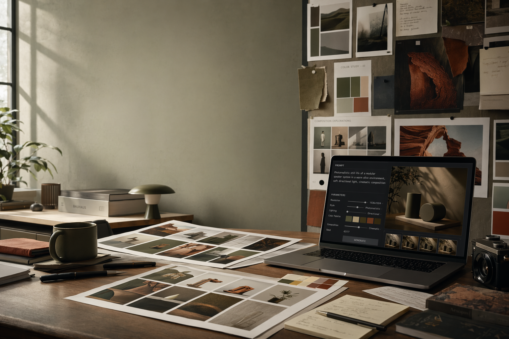
Commercial 商业品牌 1536x1024
Good for blog and social share assets. 适合博客和社交媒体预览图。
Create a cinematic editorial header illustration for an article titled 'The New Visual Language of AI Products'. Show a quiet desk with printed image contact sheets, a laptop with a prompt editor, and a wall of pinned color studies. Mood: thoughtful, precise, creative engineering. Use natural window light, muted olive and rust accents, shallow depth of field, and a high-end technology magazine style. Leave clean space at the top left for title typography.
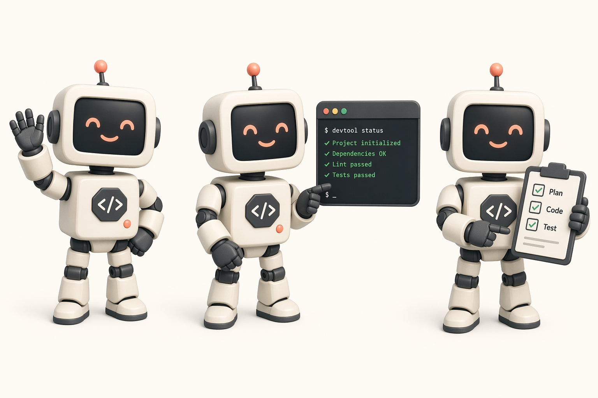
Utility Design 实用设计 1536x1024
Designed to test multi-pose character consistency. 用于测试同一角色在多姿势下的一致性。
Design a friendly AI helper mascot for a developer tool. The character is a compact geometric robot with a rounded square head, small antenna, warm screen face, and simple modular limbs. Use a clean vector-like 3D style, ivory body, dark graphite details, and a small coral status light. Show the mascot in three poses in one image: waving, pointing at a terminal, and holding a small checklist. Keep the silhouette consistent across all poses.
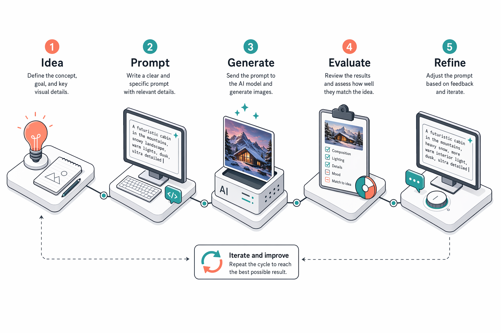
Utility Design 实用设计 1536x1024
Tests diagram label rendering and layout control. 用于测试图示标签渲染和布局控制。
Generate a clean isometric diagram explaining an AI image prompt workflow. Include five labeled stages: 'Idea', 'Prompt', 'Generate', 'Evaluate', 'Refine'. Use simple geometric workstations connected by thin lines. Make labels crisp and readable. Style: modern technical documentation, white background, dark graphite lines, small coral and teal accents, no clutter.
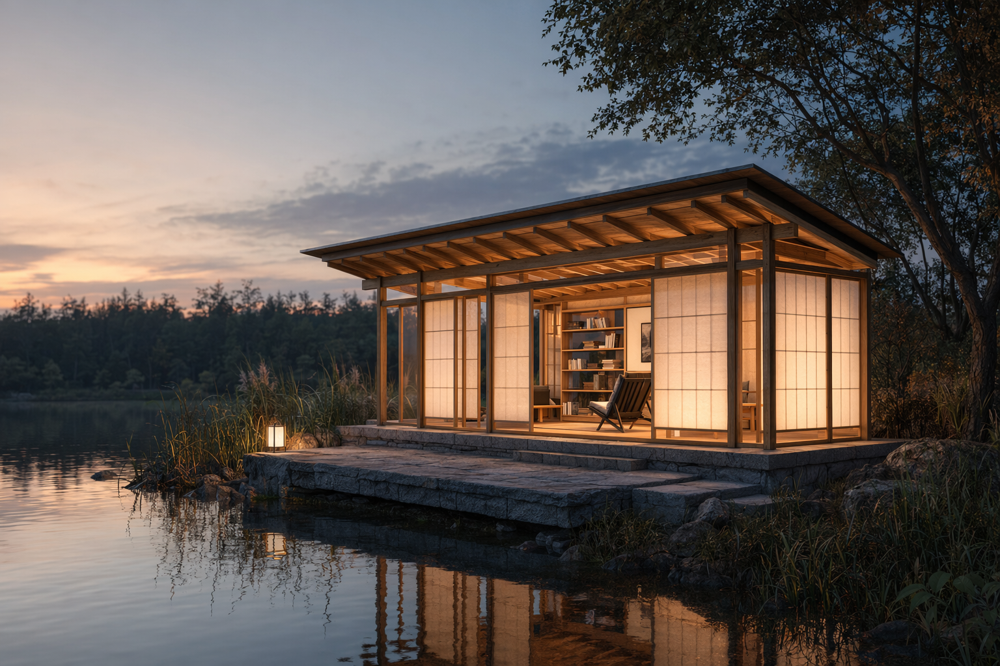
Utility Design 实用设计 1536x1024
Good for testing realism and material control. 适合测试真实感和材质控制。
Design a small lakeside reading pavilion at dusk. The pavilion uses warm timber ribs, translucent paper-like panels, and a low stone platform. Show a wide architectural visualization with calm water reflections, soft interior glow, and realistic surrounding reeds. No people. The result should feel buildable, not fantasy architecture.
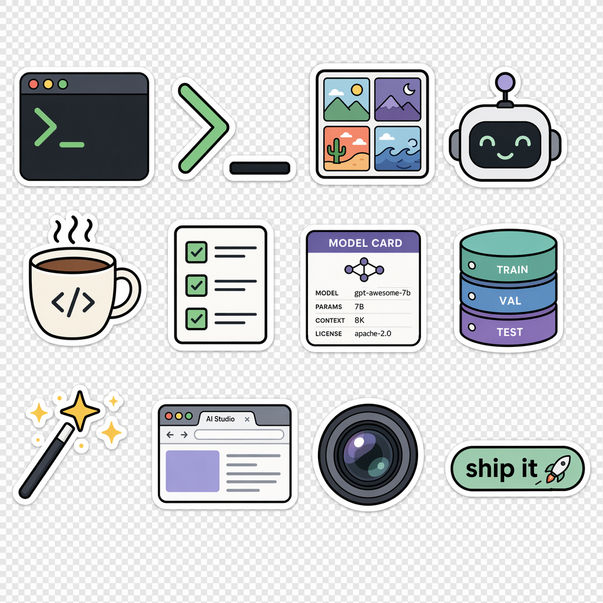
Utility Design 实用设计 1024x1024
Shareable social asset and merch-friendly category. 适合作为社交传播素材，也适合周边贴纸方向。
Create a sticker sheet for AI developers. Include 12 separate die-cut stickers on a transparent background: terminal window, prompt cursor, image grid, tiny robot head, coffee cup, checklist, model card, dataset stack, magic wand, browser tab, camera lens, and small badge reading 'ship it'. Use consistent thick outlines, limited colors, and playful but polished vector style.